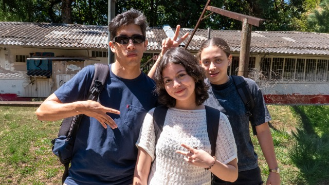

01 / JULIETTE PARDAU · CAMPAÑA
Contenido audiovisual para campañas
Una de las piezas realizadas para Juliette Pardau, con trabajo de cámara y construcción visual para redes.
Ver pieza en Instagram ↗Conocer el proyecto completo01 / PRODUCCIÓN AUDIOVISUAL
De una primera intuición a una historia que se siente. Desarrollo piezas audiovisuales que conectan ideas, personas y marcas a través de imágenes, sonido y emoción.
← Volver a servicios
EFECTOMANU · UNIVERSO CREATIVOCada proyecto comienza con una pregunta: ¿qué queremos hacer sentir? A partir de ahí construimos el lenguaje visual, el equipo y el recorrido para contar una historia con intención.
PRODUCCIÓN AUDIOVISUAL · SELECCIÓN DE TRABAJOS
Proyectos en los que he participado desde la producción y realización audiovisual.
Una de las piezas realizadas para Juliette Pardau, con trabajo de cámara y construcción visual para redes.
Ver pieza en Instagram ↗Conocer el proyecto completoUna de las siete piezas realizadas para el canal, con participación en grabación y edición.
Ver en YouTube ↗Conocer el proyecto completoContenido audiovisual para el canal, alrededor de procesos, técnicas y soluciones con fibra de vidrio.
Ver en YouTube ↗Conocer la producción completaUn capítulo de la serie documental personal sobre el regreso a la universidad y el proceso de crear.
Ver capítulo en YouTube ↗Conocer la serie completaHAGAMOS QUE SUCEDA
Cuéntame qué imaginas y exploremos cómo llevarlo a la pantalla.